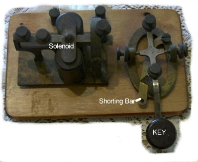
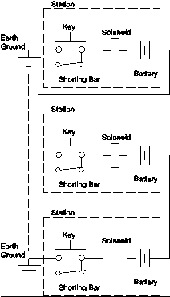
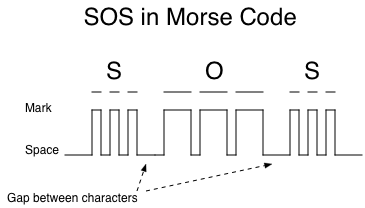
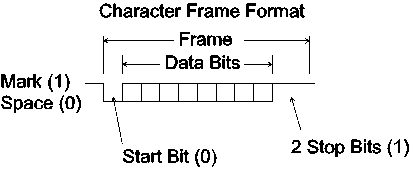
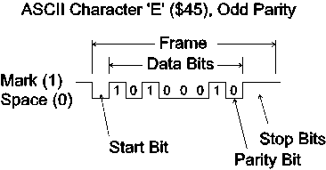
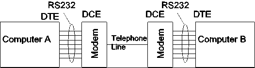
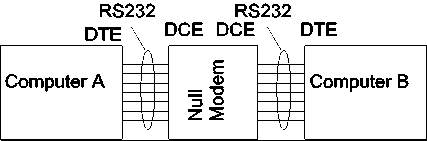
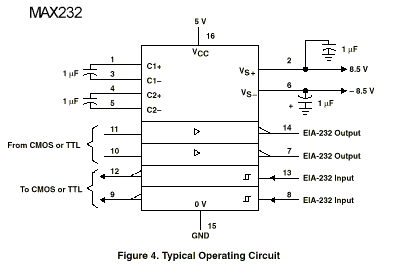

| Previous Section | Next Section | Index | Questions | Search the Text |
This section is split among several pages because of its length. The start of split sections have a table of contents showing each page and the contents of the current page. The current page is emphasized in bold.
In the next three sections we will look at the most common serial communication protocols and their implementation in the 68HCS12. In serial communication, the data is transferred serially between a transmitter and a receiver over a single wire. The Serial Communication Interface, discussed in this section, is an asynchronous (no clock signal) interface, while the Serial Peripheral Interface and Inter Integrated Circuit Interface, discussed in the following sections, have a separate clock signal provided by the “master” device.
The Serial Communication Interface is most commonly used to interface using the RS232 standard, commonly referred to as a "serial port."
Serial communication started with the telegraph. A simple telegraph station is shown below. Each station consisted of a normally open spring return switch, called a key which was wired in series with a solenoid, acting as an indicator, and a battery. A shorting bar held the key switch closed when not being used.

All stations were connected in series. A three station system is shown below:

The long distances between the stations are connected via a single wire. The current return path is through the earth ground. Normally all shorting bars are in place, and all solenoids are energized, a state called mark. When an operator wishes to transmit, they remove the shorting bar. The circuit opens and all solenoids release, a state called space. The operator sends messages based on characters formed by combinations of short and long depressions of the key. If one were to write a time chart based on the signal, such that a line represents the mark state, we would get long marks for the long depressions and short marks for the short depressions. These are called dashes and dots respectively. Characters encoded with Morse code consisted of sequences of short and long depressions (the more frequently used characters having fewer depressions) separated by gaps.

Note that all the shorting bars but one must be in place for the circuit to work. When one operator is entering a message, another operator can interrupt the transmission by breaking the connection, removing the shorting bar. This puts all of the stations in space state. The first operator knows that the transmission is broken because the solenoid will no longer click.
A later improvement to the telegraph was the Teletype(TM). A teletype replaced the telegraph key with a typewriter-like keyboard and the solenoid with a solenoid actuated printer. Operators no longer needed to know the coding used by the telegraph, and any literate person could interpret the incoming messages. Normally the keyboard provided a short circuit, causing the same idle marking state. Pressing a key would cause a frame consisting of a fixed number of equal length marks and spaces each representing a binary (bit) value, the order of the marks determined by the character represented by the key. The frame always starts with a space called the start bit. These spaces signaled all the printers that a character was arriving. The printer decoded the sequence and printed the character on a roll of paper. The data bits representing the character were a binary encoding of the value of the character, the bits being sent least significant first. Two stop bits were added to the end of the transmission for error detection and to allow time between characters for the printer mechanism to operate properly.

Common Teletypes of more recent vintage operated with 110 bits per second. Since each character frame consists of 11 bits, the maximum data rate, assuming no idle time between characters, was 10 characters per second. While ASCII characters are a 7 bit code (all characters are 7 bits), 8 bits of data is transmitted, with the final data bit often being a parity bit. Even or odd parity can be used. When even parity is used, the sum of all the data bits (including the parity bit) is even. When odd parity is used, the sum is odd. By settling on one transmission standard, even or odd, the receiver can detect single bit data errors by detecting invalid parity.

As in the case of the telegraph, the teletype has a Break key. When pressed, the teletype sends frames of only spaces. Because the spaces open the circuit, this interrupts all transmissions. The teletypes know that they are receiving a break because the frames apparently end with a space for the stop bit, indicating a bad frame.
The modern RS232 standard for serial communication is an electronic embellishment of the old electro-mechanical standards. The character data frame carries over to the modern design, however typically only one stop bit is used. It is restricted compared to the Teletype only in that it is point-to-point protocol rather than multi-point. With modern systems, this is rarely a limitation; however we will see how the 68HC12 serial interface can still be used in multipoint applications.
The RS232 interface standard is intended for connecting of computer equipment (computers or terminals, referred to as DTE) to communication equipment (DCE). Communication equipment, typically modems, allows connection between two computers. The RS232 standard was first established in 1960, and has been revised over the years. The last revision is called RS232-D, and with a new standards organization has become the EIA-232-F standard. The comments here apply to versions from RS232-C.

Often it is desired to connect two computers together, or a computer to a terminal, without modems. To do this a null modem is used, which consists of two DCE connectors and wiring which will satisfy both DTEs that they are indeed connected to DCEs. Sometimes a computer or terminal provides a DCE style interface to eliminate the need of a null modem. The 68HC12EVB is such a device. It behaves as though it is a DCE.

There are four aspects to the standard - electrical, functional, mechanical, and procedural. Highlights of the standard are given below.
The important aspect of the electrical specification is that it does not conform to today's standard logic voltage levels. Thus level converters, described in the next section, are necessary. A RS232 driver must supply a high (false or space) level of 5 to 25 volts and a low (true or mark) level of -5 to -25 volts. The receiver presents a load of 3k to 7k ohms, and must interpret a voltage level of 3 to 25 volts as high and -3 to -25 as low. An open circuit is interpreted as a logic high.
The mechanical specification requires a 25-pin D-shell connector. Most modern computers use a 9 pin connector which does not carry the full complement of RS232 signals. In any case, the male connector is used on the DTE device while a female connector is used on a DCE device. A null modem therefore has two female connectors.
The functional specification defines the signals on the connector. For the nine pin connector, the following applies:
| Name | Pin Number | Driven by | Function |
|---|---|---|---|
| Carrier Detect CD | 1 | DCE | DCE receiving a carrier |
| Received Data RD | 2 | DCE | Data from DCE to DTE |
| Transmitted Data TD | 3 | DTE | Data from DTE to DCE |
| Data Terminal Ready DTR | 4 | DTE | DTE is operational |
| Signal Common Ground | 5 | Signal Ground | |
| Data Set Ready DSR | 6 | DCE | DCE is operational |
| Request To Send RTS | 7 | DTE | DTE requesting to send data |
| Clear To Send CTS | 8 | DCE | Acknowledgment to DTE |
| Ring Indicator RI | 9 | DCE | Ringing signal from telephone line |
The procedural specification specifies the sequence of events that occurs during operation. In the simplest operation, only the RD, TD, and ground connections are used. However some DTE devices require that DSR (indicating that the "modem" is turned on) and/or CD (indicating a connection is made) be asserted. In addition, DTEs set for "hardware handshaking" require that CTS be asserted when RTS is asserted. The connector in the 68HC12EVB connects DTR to DSR and CD, and connects RTS to CTS to allow operation with finicky systems.
Two integrated circuits were designed in the early/mid 1960's to interface TTL voltage levels to RS232. These circuits are still used today: 75188 Quadruple Line Driver (drives the RS232 levels) and 75189 Quadruple Line Receiver (receives the RS232 levels).
The receiver has adjustable hysteresis, and with the default (no) control resistor will convert RS232 levels to TTL levels with no difficulty. This part requires the standard 5 volt TTL supply and produces a TTL compatible output voltage. Both the receiver and the transmitter invert the signal for the RS232 requirement of low voltage true.
The transmitter has three drivers with two inputs performing an AND logic function, and a fourth driver with a single input. The difficulty with using the transmitter is that it requires a nominal +9 and -9 volt supplies. To cope with the problem, recent driver/receiver integrated circuits have been developed with built-in voltage converters. One such example is the MAX232 Dual EIA-232 Driver/Receiver. This part provides two transmitters and receivers and runs off a single 5 volt supply. The 68HC12EVB uses a even newer MAX562 which has three transmitters and five receivers. When used in the DTE, it can drive and receive all the signals of the RS232 9 pin connector. However in the EVB application it is used to implement two RS232 ports with reduced functionality.

Continue with Configuring the Serial Communications Interface.
Return to the Index.